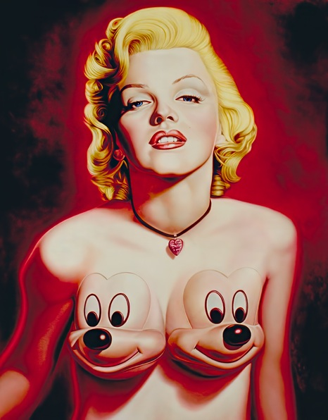

Literature
Eurekart, “Ron English,” Eurekart, May 27, 2011. Online article.

j. walkos, “Interview: Ron English,” Owl and Bear, April 16, 2010. Online article.
“Пришла очередь ПикаÑÑо,” LiveJournal, date unknown. Online article.

Pablo González, “Ron English: el hiperrealista al que McDonald’s odiaba,” Malatinta Magazine, February 17, 2014. Online article.

“Ron English Interview,” Fecal Face, date unknown. Online article; the referenced website is no longer live.
Ron English, Bipolar Surrealism (New York: Opera Gallery, 2001), exhibition catalogue.

Zephyr, “English 101 - If you aren’t already familiar,” While You Were Sleeping, issue 15, 2001.

“Parc after dark - Cult and late night classics,” Cinéma du Parc, September–October 2005.

“Le Pop Art est de Retour et il n’est pas Content (Pop Art is Back and It’s Not Happy),” Score Nouveau, December 8, 2002.

The Gallery & Studio Team, “Putting Some English on Pop,” Gallery & Studio, vol. 4, no. 1, September–October 2001.

Joe Queenan, “It’s a stick-up - The artist hijacking America’s billboards,” The Guardian: The Guide, August 12–18, 2006, p. 3.

Jim Lane, “Art Now and Then,” Art Now and Then, Tuesday, January 28, 2014. Online article.


Nicolas Vidal, “Ron English,” BSC NEWS Magazine, 2016.

David Jenison, “Ron English,” Happy Magazine, August 2001.

“Ron English - Art terrorist,” Lifelounge Magazine - The Counterfeit Edition, 2007.


“GALLERY&STUDIO - The World of the Working Artist,” GALLERY&STUDIO, September/October 2001.